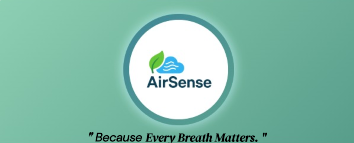

My Projects
Explore a variety of projects I've worked on, including web development, IoT systems, and AI-powered applications.

Aerodynamic Optimization: The Rear Wing as a Key to Performance in Motorsport.

AirSense: Intelligent Air Quality Monitoring in School Environments.
EasyCrowd: Intelligent Crowd Management System.

GreenTech SmartBin : A Connected Solution for Sustainable Waste Management.